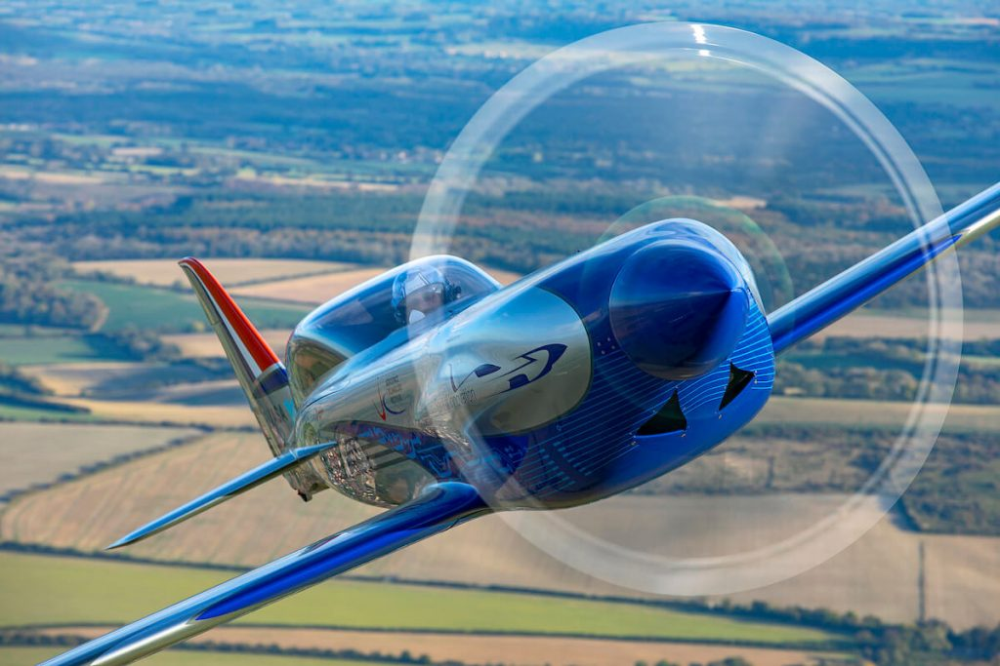
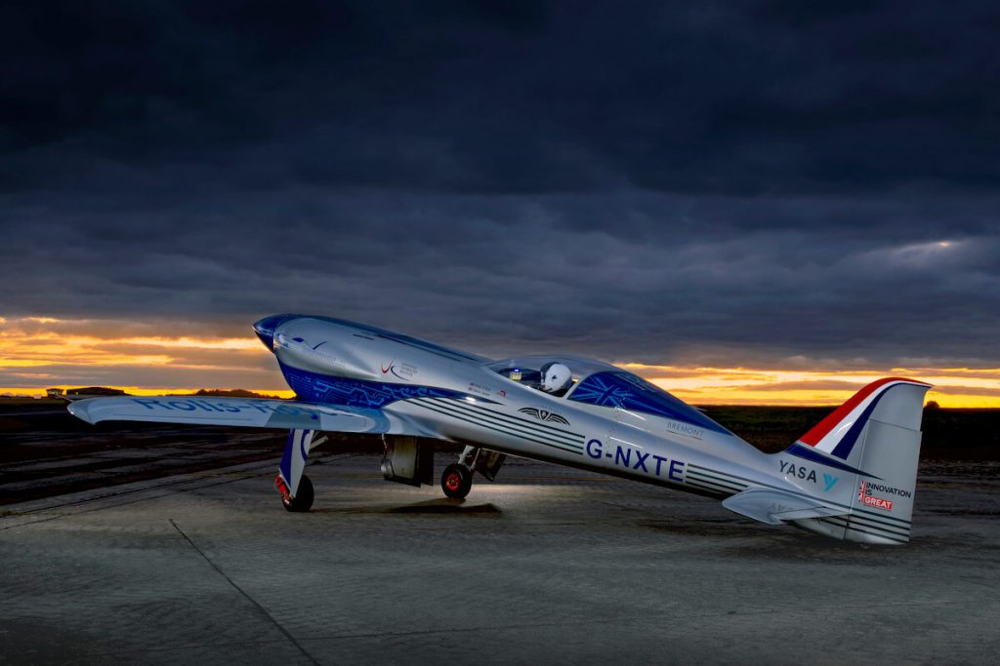
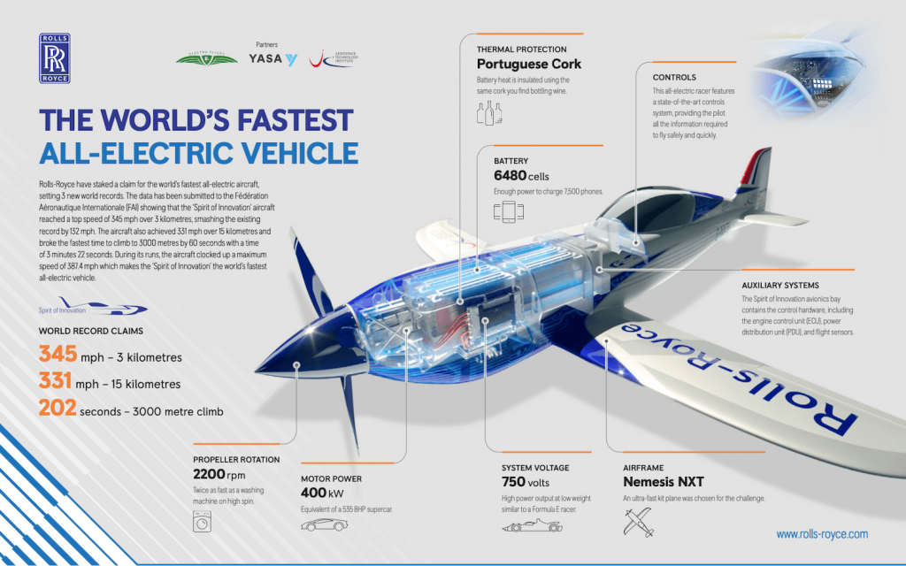

“တီထွင်ဖန်တီး မှု စိတ်ဓါတ် (Spirit of Innovation)” လို့ အမည်ပေးထားတဲ့ ဒီလေယာဉ်ဟာ လုံးဝ လျှပ်စစ်စွမ်းအင် ကိုသာ အသုံး ပြု မောင်းနှင်တာ ဖြစ်ပါတယ်။ ပထမဆုံး စမ်းသပ် ပျံသန်းမှု မှာ အမြင့်ဆုံး အမြန်နှုန်း တစ်နာရီ ၆၂၃ ကီလိုမီတာ (တစ်နာရီ ၃၈၇.၄ မိုင်) နှုန်းနဲ့ မောင်းနှင် နိုင်ခဲ့ခြင်း ဖြစ်ပါတယ်။ ရိုးရွိုက်စ် ကုမ္ပဏီရဲ့ အဆိုအရ ဒီ အမြန်နှုန်းဟာ လက်ရှိ ပျံသန်းခဲ့သမျှ လျှပ်စစ် စွမ်းအင်သုံး လေယာဉ်တွေ ထဲမှာ အမြန်ဆုံး ပျံသန်းနှုန်း ဖြစ်တယ်လို့ ဆိုပါတယ်။
ရိုးရွိုက် ကုမ္ပဏီက အပြည်ပြည်ဆိုင်ရာ လေကြောင်း ပျံသန်းမှု ဖက်ဒရေးရှင်း (Fédération Aéronautique Internationale (FAI) ကို ဒီ ပျံသန်းမှု စံချိန်ကို တရားဝင် အသိအမှတ်ပြု ပေးဖို့ တင်ပြ ထားတယ်လို့ သိရပါတယ်။
အခု ပျံသန်းမှု ကို ယူနိုက်တက် ကင်းဒမ်း (ဗြိတိန်) နိုင်ငံ ကာကွယ်ရေး ဝန်ကြီး ဌာနက ပိုင်တဲ့ ဘော့စကုမ်းဒေါင်း လေယာဉ် စမ်းသပ်ကွင်း (UK Ministry of Defence’s Boscombe Down experimental aircraft testing site) မှာ ပြုလုပ်ခဲ့တာ ဖြစ်ပါတယ်။
ပထမ အကြိမ် အစမ်း ပျံသန်းမှုမှာ တစ်နာရီ ၅၅၅.၉ ကီလိုမီတာ (တစ်နာရီ ၃၄၅.၄ မိုင်) နှုန်းနဲ့ ပျံသန်းပြီး ယခင်က တင်ခဲ့တဲ စံချိန်ဟောင်း ဖြစ်တဲ့ တစ်နာရီ ၂၁၃.၀၄ ကီလိုမီတာ (၁၃၂ မိုင်) စံချိန်ကို ချိုးနိုင်ခဲ့ပါတယ်။

ကမ္ဘာ့စံချိန် ချိုးမှုက ဒိနေရာ တင် ရပ်မသွားခဲ့ ပါဘူး။ မြေပြင်ပျံဲတက် စကနေ မီတာ ၃,၀၀၀ အမြင့်ကို ၂၀၂ စက္ကန် အတွင်း အရောက် တက်ပြပြီး ယခင် စံချိန်ဟောင်းကို ချိုးနိုင် ခဲ့ပါတယ်။
ပြီးခဲ့တဲ့ စက်တင်ဘာ လတုန်းကလဲ ဒီ လေယာဉ် ပထမဆုံး အစမ်း ပျံသန်းချိန်က အမြန်နှုန်း စံချိန် တင်နိုင်ခဲ့ ပါသေးတယ်။ အဲ့သည်တုန်းက လေယာဉ်ဟာ တစ်နာရီ မိုင် ၃၀၀ နှုန်း ပျံသန်း နိုင်လိမ့်မယ်လို့ ကုမ္ပဏီက မျှော်လင့် ထားခဲ့တာပါ။ ဒါပေမယ့် တကယ်တမ်း ပျံသန်းတဲ့ အခါမှာတော့ မျှော်လင့်ချက်ကို ကျော်လွန်ပြီး တစ်နာရီ မိုင် ၃၈၇.၄ မိုင်ထိအောင် ပျံသန်းနိုင် ခဲ့ပါတယ်။

ဒီလေယာဉ်မှာ အသုံးပြု ထားတဲ့ ဘက်ထရီဟာ အခန်းပေါင်း ၆,၄၈၀ ပါဝင်ပါတယ်။ အပူဒါဏ် ခံနိုင်ဖို့ ဘက်ထရီကို ဖော့ နဲ့ ကာထားပါတယ်။ ဒီ ဘက်ထရီကနေ ၇၅၀ ဗို့ ရှိတဲ့ လျှပ်စစ်အားကို ထုတ်ပေးပါတယ်။
လေယာဉ်ကို နှုန်သီးမှာ တပ်ဆင်ထားတဲ့ ပန်ကာ နဲ့ ပျံသန်းတာ ဖြစ်ပြီး ဒီ ပန်ကာဟာ တစ်မိနစ်ကို အပတ်ရေ ၂,၂၀၀ လည်ပတ်နိုင်စွမ်း ရှိပါတယ်။ လေယာဉ် ပျံသန်းမှု ကိုလဲ ကွန်ပြူတာနဲ့ ထိန်းချုပ် ပျံသန်းပါတယ်။
အခု လေယာဉ်ဟာ စမ်းသပ်လေယာဉ်သာ ဖြစ်တဲ့ အတွက် ပြင်ပကိုတော့ ထုတ်လုပ် ရောင်းချမှာ မဟုတ်ဘူးလို့ သိရပါတယ်။ ဒါပေမယ့် ဒီလေယာဉ် စမ်းသပ်မှုက ရရှိတဲ့ အချက်အလက်တွေကို အသုံးပြုပြီး နောင် ဒီ့ထက် ပိုအားကောင်းတဲ့ လျှပ်စစ်အင်ဂျင်တွေ တီထွင်ရာမှာ အသုံးပြုသွားမယ်လို့ သိရပါတယ်။
